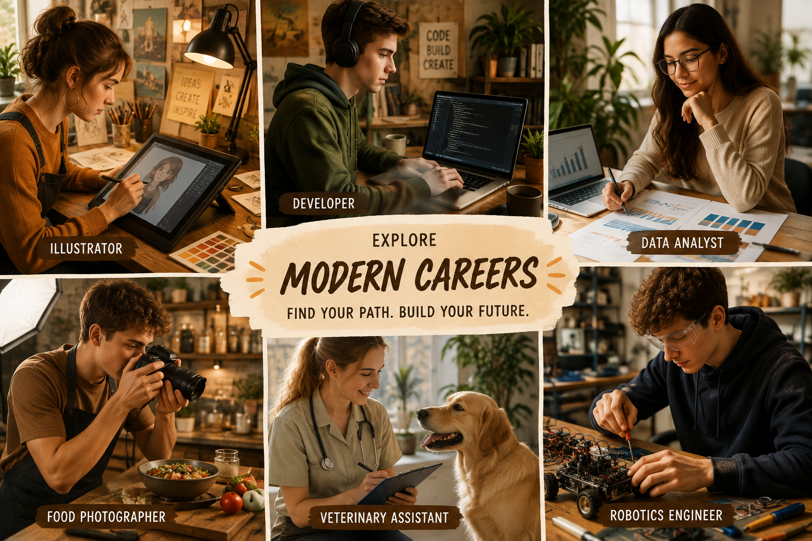
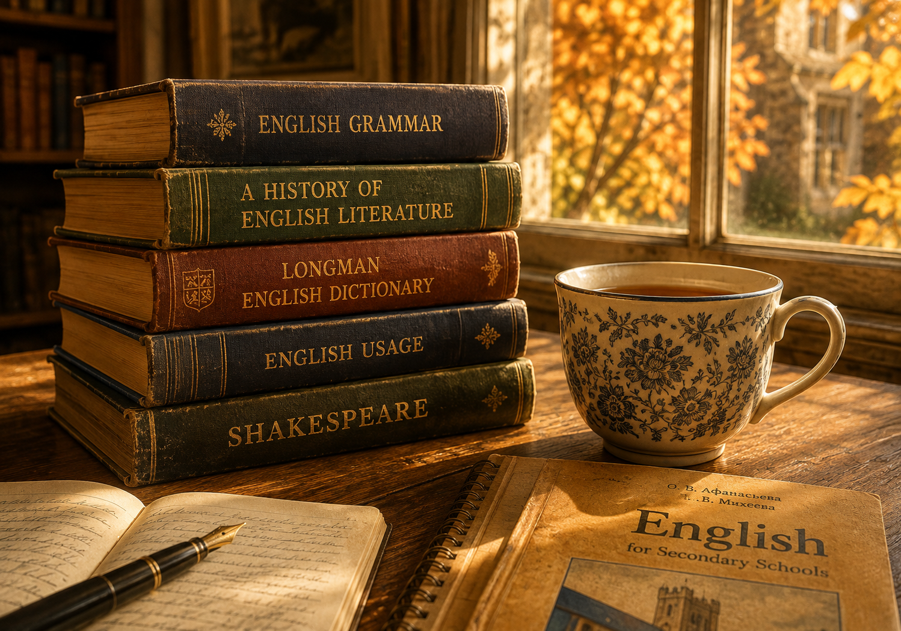
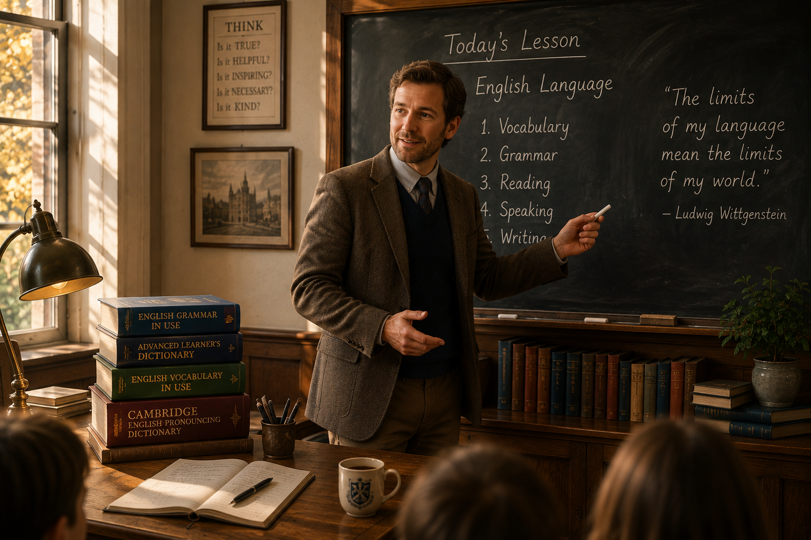
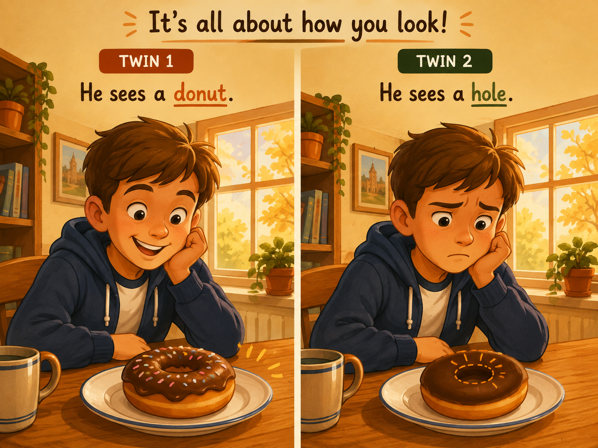
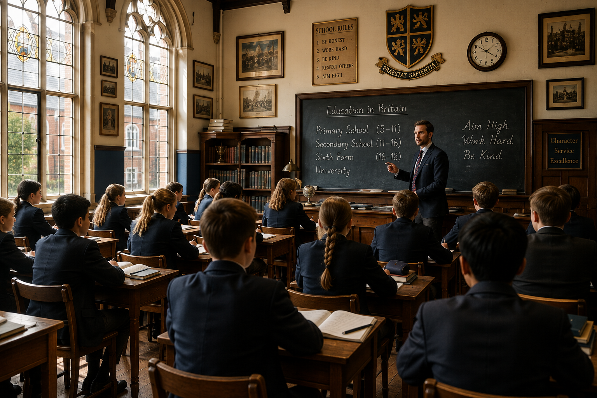
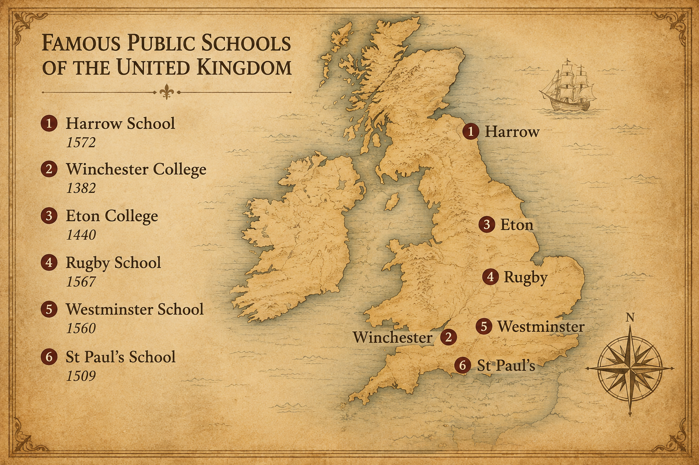
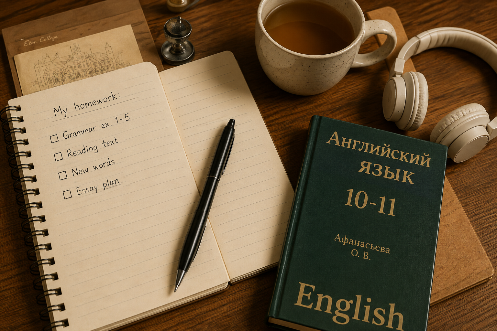

Education · The World of Learning
A full pass through British schools — nursery, primary, comprehensive, grammar, sixth form and the famous private houses of Harrow and Eton. Along the way we own twenty new words, unlock the Subjunctive Mood («If only I had…»), master adverbs and their comparative forms, add two phrasal verbs — to hand and to break — and pick up the ready-made English you actually need in class.
Warm-up · What do you already know?
Eight quick multiple-choice questions on British schools. Answer from memory first, then check.
Warm-up · 15 phrases modern teenagers actually use about education & career
tap a card to flip · then answer the 6 questions below using at least 5 of these phrases

Now try — 6 warm-up questions
Vocabulary · 20 words to own
Tap each card to flip. These words come back in every section — the reading text especially.

📖 Full Topical Vocabulary from the textbook (Unit 2 · pp. 88-89)
Six grouped tabs. Every term has IPA transcription + Russian translation + example. These are the exact words the exam draws from.
🇬🇧 vs 🇺🇸 · A famous vocabulary trap
«High school»
«Public school»
Vocabulary speaking · 10 rounds, 10 games
Say the words. Play with them. Every round is a different game — no two the same.
Vocabulary practice · match + fill
Two rounds. Round 1: match 12 definitions to their terms. Round 2: complete 10 sentences with the right vocab word.
Round 1 · Definition → Term (12 items)
Each dropdown lists all 12 terms in alphabetical order. Pick the one that fits.
Round 2 · Gap-fill (10 sentences)
Type the missing vocab term. If two forms are valid («boarders» / «hostel-boarders»), either works.
Features of a Good School
Pick 5 items you think are the MOST important (green), and 5 you think are the LEAST important (red). Compare with your partner and defend your choice.
Features practice · gap-fill from the checklist
Ten sentences describing a school. Type the missing feature from the checklist above.
Teaching Profession · Two Sides of the Chalkboard
Read both columns. Which side wins for you? Then answer the three discussion questions.

- You can work in a state school or a private school.
- There is a real opportunity for promotion.
- You can teach full-time or part-time.
- You get financial and moral reward.
- Perks and bonuses often come with the job.
- The work is creative, challenging, fulfilling, pleasant and rewarding.
- Teaching is still considered a prestigious profession.
- You need love for teaching and for children.
- You share your knowledge every day.
- It takes a huge amount of time and work.
- Serious qualifications are needed.
- Sometimes you can teach without much experience — and it shows.
- You have to keep studying further, all the time.
- You must use modern technologies (and update them constantly).
- The work can be exhausting, tiring and monotonous.
- Teachers are not always respected.
- They are often underpaid.
- In some contexts the job can even be dangerous.
Discussion · 3 questions
Teaching profession practice · advantage or disadvantage?
Round 1: sort 10 statements into advantage / disadvantage. Round 2: fill 8 sentences with the missing verb or adjective from the two columns above.
Round 1 · Sort 10 statements (advantage / disadvantage)
For each statement, click «advantage» or «disadvantage». Wrong picks turn red; right picks turn green.
Round 2 · Gap-fill (8 sentences)
Type the missing word — verbs, adjectives and nouns pulled from both columns above.
The Optimist and the Pessimist
Read the skeleton story. Then retell it using every word from the bank below at least once.

Once upon a time there lived a family with identical twin brothers. The boys looked exactly the same, but they were very different inside. One brother was a real optimist. He saw the doughnut. The other brother was a pessimist. He always saw the hole.
The parents were worried and did not know what to do. Their friends said it was silly to worry, but the parents did not agree. Finally they decided to take the boys to a psychologist. The psychologist listened for a long time and then said something terrific: "Do the opposite. Give the pessimist all the best presents — a smart bike, a new tablet, everything. And give the optimist a pile of old torn magazines."
The parents thought the doctor was a bit dumb, but they meant no harm and decided to try. On Christmas morning the pessimist opened his beautiful presents. He looked at them and said, "The bike is rotten. Someone will steal it. The tablet will break. Everybody has one anyway."
Then the parents walked into the optimist's room. He was sitting on the floor and laughing. "Look, Mum!" he shouted. "There is a whole pile of old magazines here! That means somewhere in this house there must be a pony! I only have to find it!"
The parents cared for both boys very much and never tried to cheat them again. They understood that they could not fix up an optimist or a pessimist — they could only mind their own reactions and love them both.
Phrasal Verb · TO HAND
One root, four directions. Learn the table, then fill six sentences with the right form.
| Form | Meaning (RU) | Example |
|---|---|---|
| hand over | передать полномочия, ответственность | The King handed over his authority to parliament. |
| hand out | раздавать (что-то материальное или советы) | Outside the embassy students were handing out leaflets to everyone. |
| hand down | передавать по наследству, из поколения в поколение | The custom was handed down and the heirs still keep it. |
| hand in | сдавать (работу, вещь) | "Hand in your essays soon," said the teacher. |
Fill the gap · six sentences
Subjunctive Mood · «If only I had…»
Three formulas · twelve exercises · one regretful old man named Mr Crawford.
Theory · three formulas
Block A · Mr Crawford's regrets · 6 gap-fills
Block B · Your own «if I had known then»
Block C · «But for…» transformations · 3 to solve
Example: If Anna hadn't warned us, we wouldn't have finished on time. → But for Anna's warning, we wouldn't have finished on time.
OGE Grammar · Tasks 20-28 · Word transformation · 9 gaps · Education topic
Read the text and fill each gap with the correct form of the word given in capitals. Change tenses, voice, articles, pronouns and comparatives where necessary.
OGE Vocabulary · Tasks 29-34 · Word formation · 6 gaps · Education topic
Read the text and use the word in capitals to form a new word that fits into the gap. Change the part of speech with a suffix or a prefix.
Reading · Secondary Education in Britain
The main text of the unit. Read once for the general idea, then a second time for details. Then 16 comprehension questions + 10 sentence completions.

Secondary Education in Britain
Children in Britain do not have to go to school until they reach the age of five, though many British parents choose to send their children to a nursery school when they are three or four. Nursery schools are not part of compulsory education. In them children are looked after, and at the same time they learn to draw, to sing simple songs, to count and to listen to short stories.
At the age of five compulsory education begins, and children go to a primary school. Primary schools are usually divided into two parts: infant schools for the youngest pupils (5-7), and junior schools for children from seven to eleven. In infant classes teaching is very informal — much of the time children play, learn to work with other children and start to read and to write. From the age of seven, in junior school, the subjects become more traditional: English, mathematics, science, history, geography, art, music, physical education, and, in many schools, a foreign language.
At about eleven pupils move to a secondary school. Until 1965 they had to take a difficult examination known as the eleven-plus. Those who passed went to a grammar school, which prepared them for university; those who did not went to a secondary modern school, where they got a more practical education. The system was criticised because it decided a child's future at a very early age. In 1965 the government began to introduce a new type of school — the comprehensive school — which took children of all abilities from the local area. Today the great majority of British children go to comprehensive schools.
In a comprehensive school pupils are usually put into "sets" or "streams" according to their ability in each separate subject. So the same pupil can be in the top set for mathematics and in a middle set for English. Comprehensive schools try to give every child, whatever their background, a real chance to succeed. Some grammar schools still exist, however, and they are considered among the best state schools in the country.
At the age of sixteen pupils take a very important examination called the GCSE — the General Certificate of Secondary Education. Most students take about eight or nine subjects, including English, mathematics and science. The GCSE marks the end of compulsory education. After it, students have three main options: they can leave school and start work, they can go to a Further Education College to learn a practical profession, or they can stay at school for two more years in what is called the sixth form.
In the sixth form students prepare for the A-Level exams (Advanced Level). They usually study only three or four subjects, but in much greater depth. Good A-Level results are the main condition for entering a British university. Sixth-form students often have a much freer atmosphere than younger pupils: they are treated almost as adults, they call their teachers by first name in some schools, and they organise many activities themselves.
Alongside state schools there is a strong tradition of private education in Britain. About seven per cent of British children go to private schools. Confusingly, the most famous private schools are called "public schools" — Harrow, Winchester and Eton are the best-known examples. They are boarding schools where pupils live from Monday to Friday or even the whole term. Fees at these schools are extremely high — between six thousand and nine thousand pounds a term for a child aged thirteen to nineteen — but parents pay because they believe the schools give an excellent academic education, useful social connections and a well-known name for the future.
British children spend, in total, eleven or thirteen years at school. Not every child enjoys every year, but by the end most of them can read and write comfortably in their own language, know one or two foreign languages, have a basic knowledge of science and mathematics, and — hopefully — have discovered at least one subject or activity that they will keep for life.
Comprehension · 16 questions
Sentence completion · 10 items
Type the missing part of each sentence. Answers are exact phrases from the text.
The map — Britain's six most famous public schools

Hampton School · Life inside a private school
Twelve questions and answers about Hampton — a real English boarding school. Read carefully, then take the 12-question MCQ below.
Q1. What is the structure of a working day at Hampton?
A: The school day begins at 8.45 and finishes at 3.45. There are five lessons of forty minutes each, a morning break of twenty minutes and an hour for lunch. In the afternoon most boys stay for sports or clubs until 5.30.
Q2. When are opening and closing times of the school?
A: The main gate opens at 7.30 in the morning and closes at 6.00 in the evening. Boarders, of course, live at the school all week.
Q3. Do boys have Saturday school?
A: Yes, there are lessons on Saturday mornings, but Saturday afternoons are usually kept free for matches and inter-school competitions.
Q4. How do most boys get to school?
A: Because Hampton has boys from a wide area, transport is important. Many boys come by train and then walk from the station; others use the school buses which run from several parts of west London.
Q5. How are the boys organised into forms and tutor groups?
A: Boys are divided into forms of about twenty-five pupils. Every form has a form tutor who follows the boys for two or three years and knows each of them very well. Parents contact the form tutor first for any question.
Q6. What subjects are on the curriculum?
A: The core subjects are English, mathematics and science. Then there are humanities — history, geography, religious studies — and creative subjects such as art, music, drama and design technology.
Q7. How is IT taught?
A: IT is not a separate subject on the timetable. Instead, it is used across all subjects: boys write essays on laptops, prepare presentations, and use special software for maths and science.
Q8. Is science taught as one subject or separately?
A: Up to the age of thirteen boys have "combined science". After thirteen, biology, chemistry and physics are taught separately, each with its own teacher and laboratory.
Q9. Which foreign languages does the school offer?
A: All boys start French in the first year. In the second year they add German or Spanish. Russian and Latin are also available as options from the third year onwards.
Q10. How important is sport?
A: Sport is central to school life. Every boy plays at least two afternoons a week — rugby, cricket, football, rowing, athletics or tennis, depending on the season. The school has its own playing fields on the other side of the river.
Q11. How often are parents' evenings?
A: There is one main parents' evening per year, when parents meet all the subject teachers. Form tutors send a written report every term, and parents can, of course, contact the school any time.
Q12. What is the discipline like, and is there entrance examination?
A: Discipline is based on common sense and mutual respect, not on many written rules. Boys are expected to behave sensibly and to take responsibility for their own work. Yes, there is a competitive entrance examination at eleven — usually English, mathematics and a short interview — and only about one in three applicants gets a place.
Comprehension · 12 questions
The crests · six schools you should recognise
Adverbs · form + degrees of comparison
What an adverb modifies · how it is formed · and how it changes in comparative and superlative.

Table 1 · What adverbs do
| What it modifies | Question | Example |
|---|---|---|
| a verb | How? / Where? / When? | She sings beautifully. He arrived yesterday. |
| an adjective | To what extent? | The exam was surprisingly easy. |
| another adverb | To what extent? | She speaks very quickly. |
Table 2 · Formation · 4 groups
| Group | Rule | Examples |
|---|---|---|
| I | adj + -ly | slow → slowly · quick → quickly · brave → bravely |
| II | adj ending in -y → -ily | easy → easily · happy → happily · lazy → lazily |
| III | adj ending in -le → drop the e, add -y | simple → simply · gentle → gently · terrible → terribly |
| IV | adj ending in -ful → -fully | cheerful → cheerfully · careful → carefully · beautiful → beautifully |
Table 3 · Degrees of comparison
| Group | Positive | Comparative | Superlative |
|---|---|---|---|
| I · mono / disyllabic, same as adj | long, fast, hard | longer, faster, harder | longest, fastest, hardest |
| II · special short | soon | sooner | soonest |
| III · polysyllabic in -ly | patiently, carefully | more patiently, more carefully | most patiently, most carefully |
| IV · two forms allowed | brightly | brighter / more brightly | brightest / most brightly |
| V · cleverly / easily / heavily | cleverly | cleverer / more cleverly | cleverest / most cleverly |
| VI · often — double form | often | oftener / more often | oftenest / most often |
| + irregular | well · badly · little · much · far | better · worse · less · more · farther/further | best · worst · least · most · farthest/furthest |
Practice (a) · Find the adverbs in the Rosetta Stone paragraph
Practice (b) · Rewrite adjectives as adverbs · 10 items
Type the correct adverb form of the word in CAPS.
Practice (c) · Comparative / superlative · 10 MCQ
Phrasal Verb · TO BREAK
Escape · collapse · invade · erupt. One verb, four directions. Six variants, eight sentences.
| Form | Meaning (RU) | Example |
|---|---|---|
| break away | убежать, вырваться, освободиться | The criminal broke away on the way to the police station. |
| break down (a) | ломать(ся), выйти из строя | The police broke the door down. |
| break down (b) | раскиснуть, расплакаться | When Lucy tried to speak she broke down and cried. |
| break into (a) | вломиться (в дом, машину) | Last night my neighbour's house was broken into. |
| break into (b) | неожиданно начать (laughter, tears, song) | The child broke into laughter. |
| break out | разразиться (война, пожар, эпидемия) | A fire broke out in the hotel. |
Fill the gap · 8 sentences
Classroom English · Speak up in class
Six real situations, ready-made English phrases. Tap the ▶ next to each line to hear it.
Situation 1 · You have a problem
Situation 2 · You are confused / have a request
Situation 3 · You ask for instruction
Situation 4 · You offer help or ask permission
Situation 5 · You have a language problem
Situation 6 · You inform your teacher
📚 Homework · pick one
